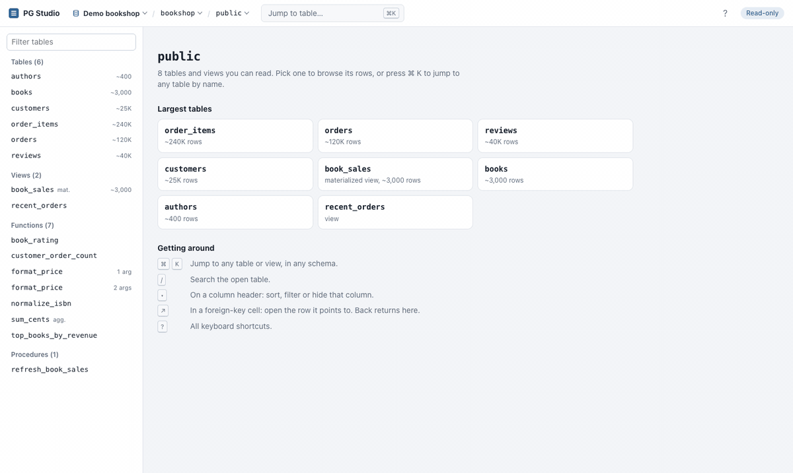
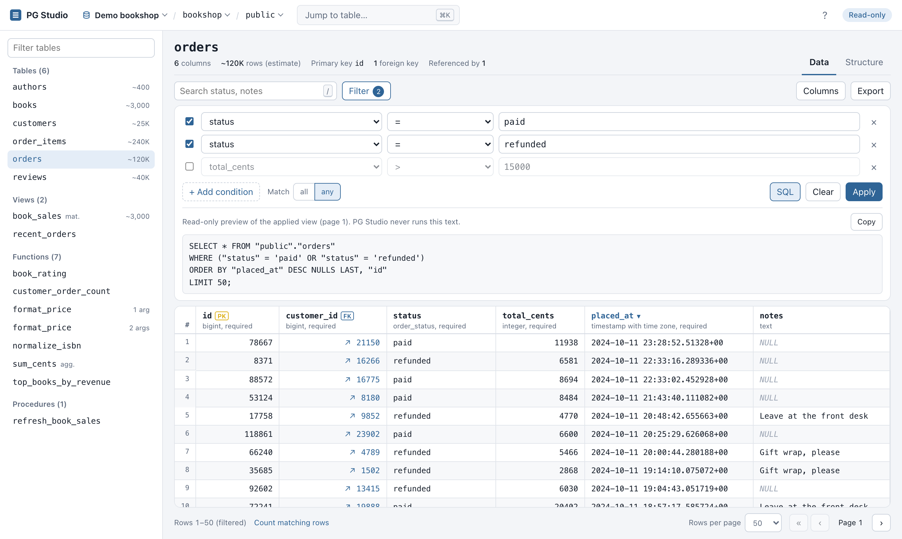
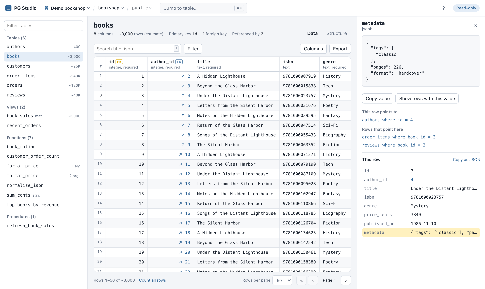
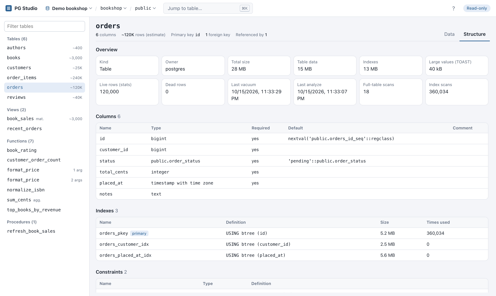
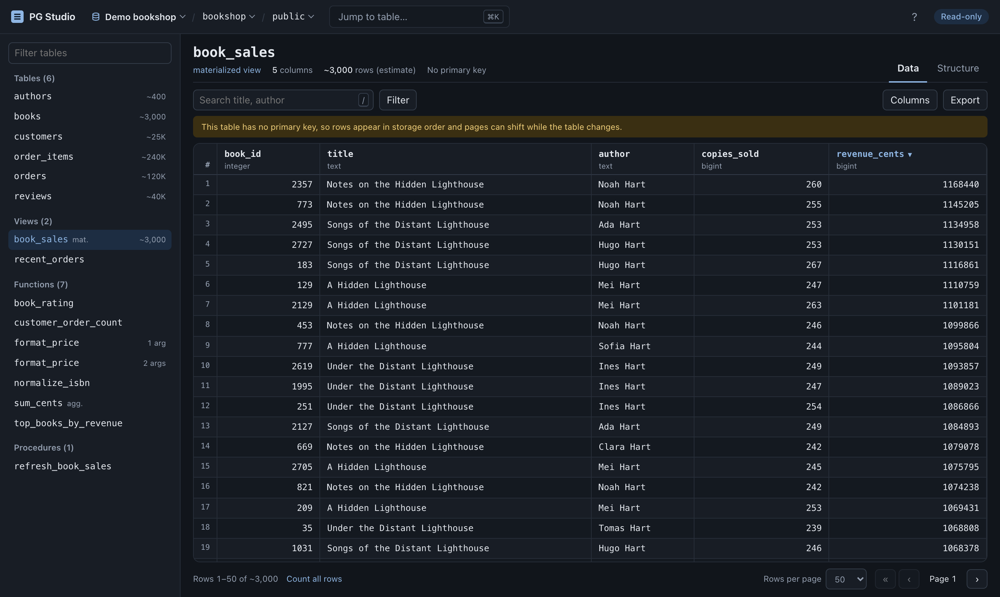

A fast, read-only PostgreSQL browser
Browse tables and views, filter and sort, follow foreign keys and read table structure in a clean web UI that runs on your machine. The browser never sends SQL, and every query is read-only.

Everything you need to look at your data
And nothing that can change it. PG Studio does one job well: lets you explore a PostgreSQL database quickly and safely.
Every server, every database
Saved connections and a database switcher in the top bar. Credentials never reach the browser.
Functions and procedures
Signatures, flags, full source and the triggers that call them. Shown, never run.
⌘K jump anywhere
Fuzzy search across every schema's tables, views and functions, recent ones first.
Filter panel
Stack conditions, match all or any, switch one off, and preview the exact SQL. All server-side.
Follow foreign keys
Jump to the referenced row, see the rows that point back, and use Back to return.
Row inspector
Full values with pretty-printed JSON, plus every field of the row in a side panel.
Structure tab
Sizes, stats, indexes and usage, constraints, triggers, and a generated CREATE script.
Fast deep paging
Keyset pagination: page 9,000 is as fast as page 1. 6 ms vs 1.2 s with OFFSET on 1M rows.
CSV and JSON export
Export the current view with its filters and sort, with formula-injection protection.
Shareable URLs
Connection, database, table, filters, sort, page and tab live in the URL. Bookmark any view.
Keyboard first, dark mode
Arrow keys, Enter, /, [ ] and ?. Follows your OS theme.
See it in action
Screenshots use the bundled demo database. All data is generated.




Quick start
Try it in about 30 seconds with the bundled demo database (needs Node.js 20.6+ and Docker).
# clone and install git clone https://github.com/sagaryeole/PG-Studio.git cd PG-Studio npm install # start a throwaway PostgreSQL with ~430k rows of fake data npm run demo:db # open http://127.0.0.1:4321 npm run demo
Using your own database? Create a SELECT-only role, put its URL in .env and run npm run dev. Full instructions →
Safe to point at a real database
Every control is tested against hostile input. Read the security model →
- No SQL from the browser. Identifiers are resolved from
pg_catalogand quoted; every value is a bind parameter. - Read-only twice over.
BEGIN READ ONLYwith a mandatory rollback, plus a SELECT-only role. - Bounded reads. Row limits, cell size cuts, capped exports and a per-query
statement_timeout. - Localhost hardening. Binds to
127.0.0.1, checks theHostheader against DNS rebinding, and sends a strict CSP. - XSS-safe. Database values are always rendered as text.
- No credential leaks. Connection strings are redacted from logs and errors.